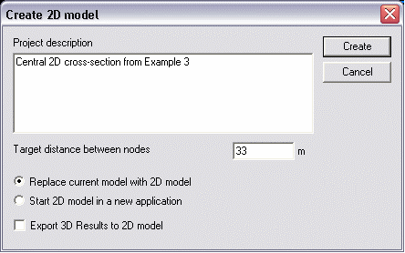

The following dialog is shown when selecting to create a 2D model from a cross-section within a 3D model

A target nodal spacing can be entered manually if so desired otherwise a default value from the 3D model is used.
Options can be selected to replace the current 3D with the 2D model or open the 2D model in a new instance of GEOMEC. Results can also exported from the 3D model to the 2D model if required and the relevant box ticked.